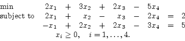
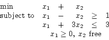
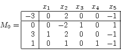
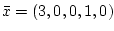
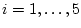
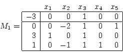
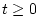

First Exam, Tuesday, October 1, 2002.
Note:
For Fall 2003, you are not responsible for the
following questions drawn from sections 5.5-5.8:
4(a), 4(b), 4(c), 4(e), 5(b).
The remaining questions cover material in chapters 2, 3, 4,
and sections 5.1-5.4.
You may use any result from your notes or a homework that is clearly stated.
You may use one sheet of handwritten notes, but no other sources.
The exam consists of five questions, and lasts one hundred minutes.
- 1.
- (20 points)
Wiley Wiz is a mutual fund manager trying to decide how to divide up
$12 million between domestic and foreign stocks.
Domestic stocks have been returning 11% per year and foreign 17%.
Naturally, Wiley would like to maximize the annual return from his
investments. Still, he wants to exercise some caution.
No more than $10 million of the fund should go into domestic stocks
and no more than $7 million into foreign.
Also, at least half as much should be invested in domestic as
foreign to maintain some balance.
- (a)
- (10 points)
Formulate a mathematical programming model with 5 main constraints
to decide Wiley's optimal investment plan using decision variables
x1 := millions of dollars invested in domestic stocks
and x2 := millions of dollars invested in foreign stocks.
- (b)
- (10 points)
Using a 2-dimensional plot, solve your model graphically for an optimal
investment plan.
- 2.
- (12 points)
Find a basic feasible solution with basic variables x2 and x4
for the linear programming problem

Is this basic feasible solution optimal?
- 3.
- (10 points)
- (a)
- (7 points)
Put the following problem into standard form:

- (b)
- (3 points, no partial credit. Lose one point for incorrect answer.)
For the problem in part (a),
use the graphical method with the original variables x1 and x2
to determine which of the following is true:
- A: The LP has an optimal solution.
- B: The LP is infeasible.
- C: The LP has an unbounded optimal value.
Circle your choice: A B C
- 4.
- (18 points; 3 points for each correct answer,
lose one point for each incorrect answer. No partial credit.)
For each part, either the statement is always true or there exists
a counterexample to the statement.
If the statement is always true, circle TRUE, otherwise
circle FALSE.
- (a)
- If an artificial variable
remains as a basic variable after the artificial problem has been
solved, then the original linear program is infeasible.
TRUE FALSE
- (b)
- Given a linear program in canonical form, if we pivot using the
simplex rule, then a strict decrease in the objective function
value is obtained.
TRUE FALSE
- (c)
- A linear program in canonical form always has a feasible solution.
TRUE FALSE
- (d)
- If the feasible region for a linear program is unbounded,
then no finite optimal value exists.
TRUE FALSE
- (e)
- Every tableau in standard form can be put into canonical form
by an appropriate sequence of pivots.
TRUE FALSE
- (f)
- If a linear program has a unique optimal solution, that optimum
most occur at an extreme point of the feasible region.
TRUE FALSE
- 5.
- (40 points; each part is worth 5 points.)
Consider the linear programming problem with tableau:

The corresponding basic feasible solution is
,
and x1, x3, and x4 are the basic variables.
- (a)
- Construct a graph of the feasible set in x2x5 space
and label each hyperplane as xi=0 for some i, .
- (b)
- The given basic feasible solution is degenerate.
What feature of the graph corresponds to this property?
- (c)
- This tableau is not in optimal form.
If you try to take a simplex pivot, what is the simplex direction?
- (d)
- What is the minimum ratio for the simplex direction in
part (c)?
- (e)
- What will be the new point after the pivot? Why?
(Don't make the pivot. It does not suffice to quote from part (f).)
- (f)
- After making the pivot, the following tableau is obtained:

Find a point x* and a vector v such that the set of optimal solutions
is x*+tv for any scalar .
- (g)
- Graph the set of optimal solutions in your picture in part (a).
- (h)
- Plot a contour of the objective function in your picture in part (a).
John E. Mitchell
2003-09-09